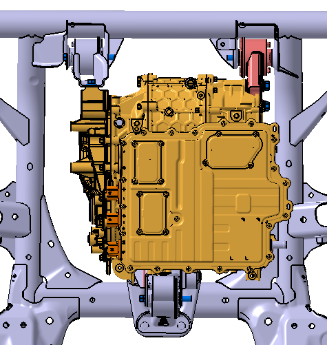
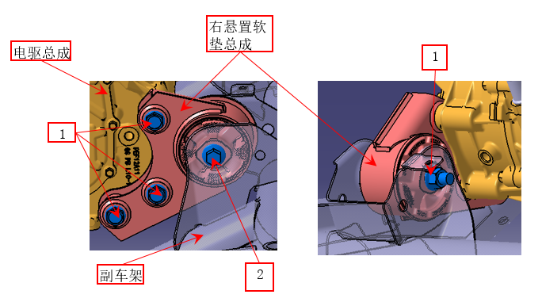

Описание
1. Узел мягкой подушки правой опоры расположен в правой передней части электропривода в сборе, одной стороной крепится к электроприводу в сборе, а другой — к подрамнику в сборе. Как показано на рисунке:

Снятие:

1. Подготовить домкрат и мягкий предмет, например резиновую прокладку, установить домкрат под днище электропривода в сборе, поместить мягкий предмет между домкратом и электроприводом в сборе во избежание повреждения корпуса электропривода в сборе, затем приподнять электропривод в сборе с помощью домкрата;
2. Выполнить Снятие гайки 1 и болта 2 соединения узла мягкой подушки правой опоры с подрамником в сборе, выполнить Снятие болта 3 соединения узла мягкой подушки правой опоры с электроприводом в сборе, завершить Снятие узла мягкой подушки правой опоры 8.
Установка:
1. Сначала совместить монтажные отверстия узла мягкой подушки правой опоры и электропривода в сборе, последовательно затянуть болты 2, затем с помощью ключа затянуть гайку 1;
2. Затем совместить монтажные отверстия узла мягкой подушки правой опоры и подрамника в сборе, затянуть болт 3, затем с помощью ключа затянуть;
3. В заключение последовательно затянуть с моментом (120 ± 6 N.m).